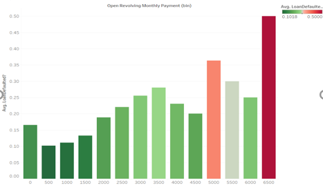
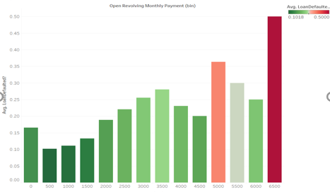

Introduction
Peer to Peer (P2P) lending is a growing trend in America; indeed, many people are seeking sound investment options beyond the traditional institutional banks and P2P platforms are stepping in. And this is a good thing for many Americans, as a majority of them are unprepared for retirement. In March of 2016, Google undertook a comprehensive Google Consumer Surveys study wherein the firm analyzed retirement savings across the country. The results were somber: one in three Americans have no retirement savings and 56% have less than $10,000. A reason for this is a lack of safe investment options for the average, non-affluent citizen. Fortunately, P2P lending provides an alternative investment option for these individuals. However, P2P lending also entails risks. The number one risk of P2P lending is borrower default. Recognizing this, our team set out to lower the risk of lenders in P2P transactions by providing them more accurate information to select reliable borrowers. Specifically, we examined the P2P lending site called Prosper. Prosper was founded in 2006 and since then has transacted over $6 billion through its platform.
 
